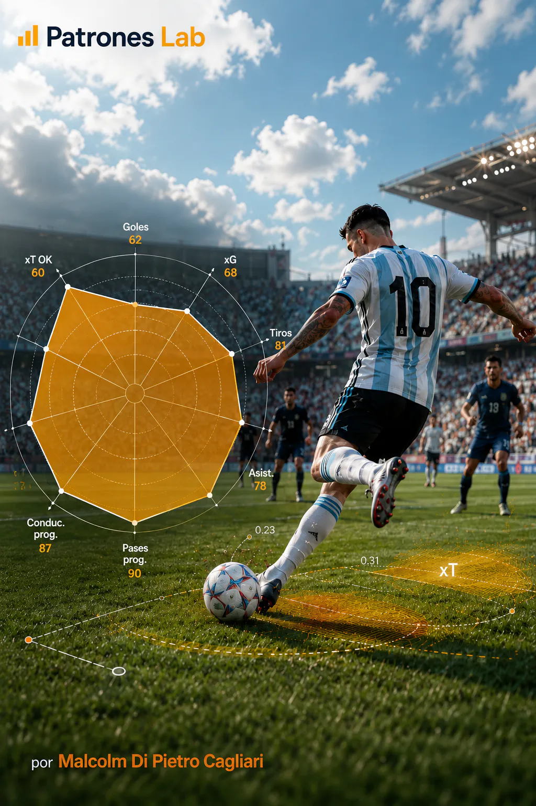

MACHINE LEARNING · PROJECT 06

Project 11 · Football Analytics
2022 World Cup Statistics: Percentile Radar
Analysis of individual player performance at the Qatar 2022 World Cup using StatsBomb data. The project uses percentile radars to compare players in similar positions, identify differences in their playing profiles and recognize the areas in which each stands out relative to the others.
CONTEXT AND OBJECTIVE
The project uses Qatar 2022 World Cup records to compare how players participated in different playing situations. Passes, recoveries, duels and other actions make it possible to analyze specific aspects of each player. Because roles vary by position, comparisons are made between players with similar responsibilities rather than all tournament participants.
The dataset covers all 64 World Cup matches and 234,637 events from StatsBomb. Each record identifies an action, the player who performed it, their team and, where applicable, the location on the pitch. Lineup data also makes it possible to calculate how many minutes each player played and in which positions. This information supports more consistent comparisons of their statistics.
Individual indicators are calculated from these data, and the position in which each player accumulated the most minutes is identified. A comparison group is then established and the percentile of each statistic is calculated. This percentile expresses the player’s relative standing against others in the same position. The radar displays these differences in a single chart, within the context of the World Cup and the selected set of players.
DATA AND RADAR CONSTRUCTION
PREPARING EVENTS, MINUTES AND POSITIONS
First, events and lineups from the 64 matches are downloaded and combined. Each action is associated with its player and team. Playing time is calculated using recorded entries, exits and position changes during matches. If a player appeared in more than one position, the position with the most minutes is considered their main one.
To make comparisons meaningful, players are organized into five groups according to their main position:
- Attacking players
- Midfielders
- Full-backs
- Centre-backs
- Goalkeepers
A minimum of 180 minutes played is required to avoid comparisons based on very brief appearances.
PERFORMANCE INDICATORS AND NORMALIZATION
Playing actions are counted to build the radar indicators. For centre-backs, eleven statistics are used, grouped by the aspect of play they describe:
- Duels: won and aerial duels won.
- Defensive actions: interceptions, clearances, blocks, recoveries and pressures.
- On-ball play: passes and pass completion percentage.
- Progression: progressive passes and progressive carries.
The other groups use indicators suited to their roles, such as goals, expected goals (xG), assists, crosses or saves.
Because players did not play the same number of minutes, statistics counting actions are expressed per 90 minutes of play. This allows their frequency to be compared without automatically favoring players who spent more time on the pitch. For example, two defenders may have the same number of interceptions but different values per 90 minutes if they played a different number of matches.
METRICS PER 90 MINUTES
m_{90}=\frac{n_{\text{acciones}}}{t_{\text{minutos}}}\times 90
Normalization divides the number of recorded actions by minutes played and multiplies the result by 90. It applies to volume metrics, not success percentages.
Percentages are calculated differently. For passes, the number of completed passes is divided by total attempts. The notebook also distinguishes progressive passes: completed passes that advance at least ten units longitudinally toward the opposing goal. An equivalent criterion is used to identify progressive carries.
PASS COMPLETION PERCENTAGE
C_{\text{pases}}(\%)=\frac{P_{\text{completados}}}{P_{\text{intentados}}}\times 100
The pass completion rate is obtained by dividing successful passes by attempted passes. When no attempts are recorded, the notebook calculation returns zero to avoid an undefined division.
PERCENTILES AND COMPARATIVE VISUALIZATION
To calculate percentiles, players in the same positional group who meet the minimum playing time are selected first. Each statistic is then ordered from lowest to highest, and each player’s relative position is determined. The calculation is performed separately for each indicator because a player may excel in one aspect and rank lower in another.
PERCENTILE CALCULATION
\operatorname{Percentil}_i=100\times\frac{r_i}{N}
N is the number of players in the population and r is a player’s rank in the metric’s ascending order. In a tie, the calculation uses the average rank, as Pandas does with rank(pct=True).
The visualization is built with PyPizza, a tool from the mplsoccer library. Each radar slice represents a statistic, and its length corresponds to the player’s percentile. Colors distinguish groups of related indicators. A longer slice indicates a higher relative value for that metric, but does not by itself constitute an overall performance rating.
DELIVERY AND LEARNING
The notebook generates a radar and a table with the selected player’s original values, statistics per 90 minutes and percentiles. For example, Nicolás Otamendi is compared with 76 centre-backs who played at least 180 minutes. His results show clear differences between indicators:
- Completed passes: 89.5th percentile.
- Aerial duels won: 75.0th percentile.
- Blocks: 14.5th percentile.
This contrast identifies the areas in which a player ranks above or below their peers without turning the radar into an overall grade.
The comparison can be repeated for other World Cup players using the same calculation rules for each position. Interpretation must always consider playing time and each player’s tactical role: a percentile describes their standing within the chosen group, not the absolute quality of their performance.